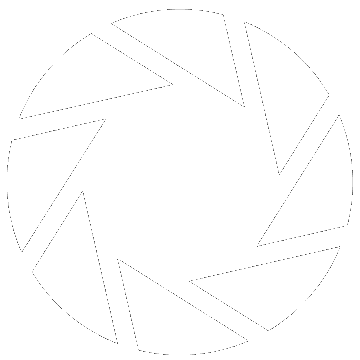
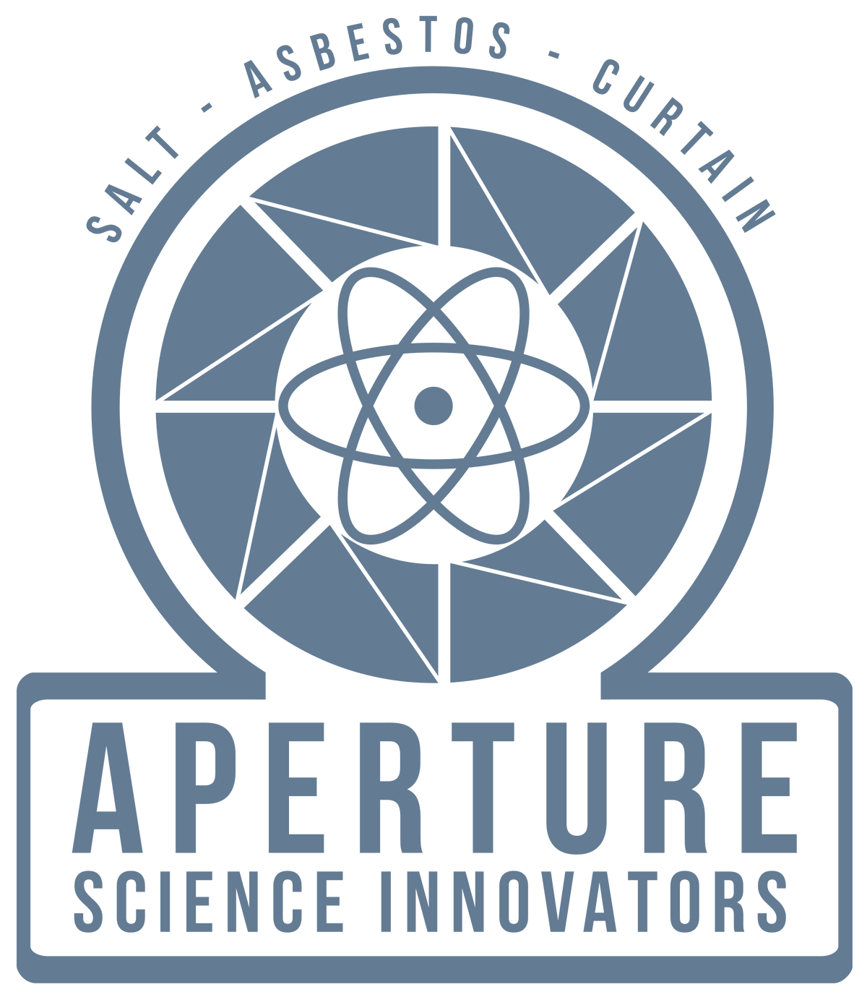

Overview
Purpose
Science isn't about why, it's about why not?!
Audience
For the good of all of us... except the ones who are dead.
Branding
Website Logo

Style Guide
Color Palette
Palette URL: https://coolors.co/f3f3f6-0a0a0a-f79321-396e94-ffffff| Primary | Secondary | Accent 1 | Accent 2 |
|---|---|---|---|
| [#F3F3F6] | [#0A0A0A] | [#F79321] | [#396E94] |
Typography
Heading Font: Lato
Paragraph Font: Helvetica
Normal paragraph example
Aperture Science, Inc. is a United States-based scientific research corporation appearing as the main antagonistic organization in Portal and Portal 2, as well as its logo on the Borealis in Half-Life 2: Episode Two.
The main facility is the Aperture Science Enrichment Center, located in Upper Michigan, with at least one other base of operations in Cleveland, Ohio. Originally a shower curtain manufacturer named Aperture Fixtures, it evolved over the course of half a century into an experimental physics research institution and a bitter rival of Black Mesa.
Colored paragraph example
Aperture Fixtures was founded in the late 1940s by Cave Johnson as a shower curtain manufacturer - the name "Aperture Fixtures" was chosen "to make the curtains appear more hygienic" - and by 1943 Cave's company was routinely earning the annual shower curtain salesman award. Using his newly accumulated funds, Cave invested in real estate and purchased a vast, decommissioned salt mine in Michigan in January 1944. Aperture Science Innovators was incorporated in 1947, receiving the Best New Science Company Award that same year, granted by the Science and Business Institute of America. Its long rivalry with Black Mesa started at the same time: Aperture was #2 on the Top 100 Applied Science Companies ranking for 1949, starting a pattern that would never be broken.
Navigation
Site Map
Content
Home page
Introductory video for the Portal Gun - Here at Aperture - https://youtu.be/TAcuNLyKy4Y Valentine's Day Gift Buying - https://youtu.be/w5I3VnCHWsU (Saturday February 14, 1998) Upcoming Events: Bring Your Daughter to Work Day (Feb 23th, 1998) St. Patrick's Day (March 17th, 1998)
Images for the Home page

Products
GLaDOS- Our Genetic Lifeform and Disk Operating System (or GLaDOS for short), is our attempt at making a complete human-computer hybrid. Forget cyborgs and personality constructs- GLaDOS is based from the entirety of a human's conscience! That means she's got heart, soul, and superintelligence! -NOT READY FOR SALE! Turrets- View our Investment Video Here! https://www.youtube.com/watch?v=GGPIQ72-2Vg or https://youtu.be/6i-nMWgBUp0 Portal Gun- Almost done with testing! Wait and see! Long-Fall Boots- https://youtu.be/wX9Sc88qregTesting Elements: Panels https://youtu.be/0qcED35LL8I Crushers (only mention) Arial Faith Plates https://youtu.be/fE3B9uGnVlA Thermal Discouragement Beam https://youtu.be/yFRbGppLaUI Excursion Funnel https://youtu.be/1oVpE40V9rE Pneumatic Diversity Vent https://youtu.be/DOH6BprN9FI Repulsion Gel https://youtu.be/IaZ75vU112Q Propulsion Gel https://youtu.be/Pcf99_DZZew Cubes (Weighted Pivot, Companion, Weighted Storage) - maybe link to a shopping website? 1500 Megawatt Aperture Science Heavy Duty Supercolliding Superbutton - link to shopping or Mr. Volt or something Investment Opportunities: Perpetual Testing Initiative (website and video) Appy to be a test subject (https://half-life.fandom.com/wiki/ApertureScience.com#Trivia) - use flash program Videos (Panels, Long-Fall Boots, Bot Trust, Turrets)
Images for the Page 2


About Aperture
"Science isn't about why, it's about why not?!" -Cave Johnson, Founder of Aperture Science
Our founder, Cave Johnson, believed that "Science isn't about why, it's about why not!" Cave built Aperture Science from the ground up, originally a shower curtain manufacturer for the military named Aperture Fixtures. By 1943 Aperture Fixtures was routinely earning the annual shower curtain salesman award, and in January 1944, Cave invested in a vast, decommissioned salt mine in Michigan, which later became Aperture Science Innovators in 1947. In that same year, Aperture Science Innovators received the Best New Science Company Award, granted to us by the Science and Business Institute of America.
Aperture Fixtures has evolved over the course of half a century into an experimental physics research institution, which we lovingly call Aperture Science. We have been #2 on the Top 100 Applied Science Companies ranking since 1949, our only rival being Black Mesa.
We have a few various locations, but our main facility is the Aperture Science Enrichment Center, located in Upper Michigan.
Images for the Page 3
Wireframes
Create three wireframes for your site. One for each page and list them here
Home
The landing home page of Aperture Science! it has links for investors and also shows the stuff they test with. These will have links to their respective youtube videos

About Aperture
A page that tells the history about the company.

Our Products
Displays a list of their products they sell.